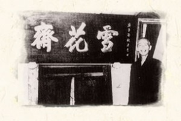
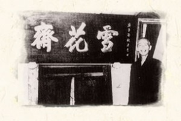
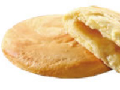

我們參加的網界博覽會類別：地方特產特色
地方社區描述
崑派餅店 - 位於 台中市神岡區中山路546號，是一間百年老店， 崑派卻因為重質不重量的生產流程，在第三代經營者堅持：「大作大漏氣，腳步要踩穩」的原則下，每一塊餅都是扎扎實實地純手工製作，口感扎實美味。 (左圖)
雪花齋餅店 - 創辦人呂水，十七歲受聘為陳德全先生的大廚，其手藝精湛流傳於中上層社會，因此常與地方名流，風流雅士交往，深穫各界嘉賓讚賞。1900年在當時地方仕紳與各方人士的鼎力協助下，於豐原鎮中正路200號成立”雪花齋”。
店名是源於當時多位秀才在開店時所共同吟詠的詩句:「花香天下中秋桂、雪映莊前臘月梅」，由石岡秀才書道名家揮毫題字上匾。(右圖)
 

(圖片來源：https://reurl.cc/mlGOM7) (圖片來源：https://reurl.cc/kl7err)
太陽餅-是一種甜餡薄餅，一般內餡是麥芽糖，源起於台中市神岡區社口一帶林家崑派的麥芽餅，是台灣台中市的點心，為中臺灣的名產之一。太陽餅名稱並未註冊商標，以致後來同業的店家皆可使用此名。(圖一)
麵龜-為華南地區祭祀、婚喪喜慶用之面粉製食品，呈橢圓形，約巴掌大小，外表通紅，口感近似麵包。內餡以紅豆沙、綠豆沙、花生粉等甜餡為主。 (圖二)
綠豆椪-是台式的傳統月餅，內餡是由綠豆泥甜餡包入豬油及紅蔥頭烘烤製成，有時還會加入少許豬肉。近年由於較重視健康，許多業者也推出不含豬肉、豬油等材料，純以綠豆泥做內餡的版本。
傳統月餅份量大（手掌大），自1980年代初起，有台灣「餅都」美譽的台中豐原，業者發明無豬油渣，全是綠豆泥餡，份量是傳統月餅一半的小月餅。 (圖三)
雪花月餅-以綠豆椪為原型，1925年首次於台灣區糕餅展推出，在清一色日本內地人得獎的比賽中，奪得銅牌大獎。雪花齋的「雪花餅」成為豐原區最具代表性的糕餅，開發者呂水也被恭為「綠豆椪之父」。 (圖四)



(圖片來源：https://reurl.cc/WDkmAD) (圖片來源：https://reurl.cc/4Q4zLL) (圖片來源：https://reurl.cc/lv9Wzq) (圖片來源：https://reurl.cc/RvjVkx)
(圖一) (圖二) (圖三) (圖四)
地方描述
對台灣人來說，糕餅從很久以前便和生活密不可分，不論是中秋節必吃的月餅、婚喪喜慶傳統糕餅，到現代的伴手禮，都可以看到各種不同的餅出現。
隨著台灣的經濟越來越好，現在糕餅已經是垂手可得的美食，但是想吃到最美味的糕餅，那就一定要去糕餅的故鄉—台中尋覓了。
日治時期，日本人在豐原設置麵粉工廠，使得豐原當地原料取得方便，再加上當地糕餅業者開發出討好日本人的「日本餅」，進而奠定了豐原餅鄉的封號；當地的名門望族也支持了不少餅舖研發糕餅，而文人士之間交際往來也常以糕餅相贈，種種的原因都造就了現代的「糕餅之都」。
專題研究計劃概要
為什麼來台中玩一定要買餅，當作紀念或伴手禮?為什麼台灣大道上有數不清的太陽餅店?到底哪一家是真的，哪一家才是創始店?
相信這類的疑問已存在許久，讓我們透過此計畫來為大家解釋。
我們的網際網路環境
以學校電腦為主，利用學校資源提供我們查詢資料、網頁。使用便捷的網路來完成此專題研究。
學校電腦教室的電腦則是以光纖主 幹連接校內的電腦中。
我們克服的難題
台中知名餅店眾多，從中挑選最貼合主題的店家是一大難題，最後折衷選了兩間有名且評價高的店家。剛開始討論時完全沒頭緒，後來我們說出自己的想法與意見、分工合作。
心得與目標
初次接觸網頁與專題製作，也許剛開始較難跨出第一步，之後藉由思考與討論便能得到有效的資訊及成品。希望我們能透過此專題呈現地方特產的價值，深入探討文化之間的共通性，傳達文化資產純樸的好。